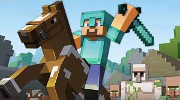
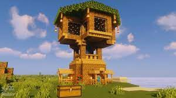
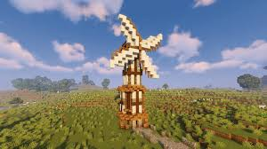

WHATS A SANDBOX GAME?
A sandbox is a style of game in which minimal character limitations are placed on the gamer, allowing the gamer to roam and change a virtual world at will.
Such games may lack any objective, and are sometimes referred to as non-games or software toys. More often, sandbox games result from these creative elements being incorporated into other genres and allowing for emergent gameplay.



Minecraft is a Sandbox game
Minecraft is a game where players place blocks and go on adventures. This includes anything from crafting simple items like containers or weapons, to building structures like houses, castles, and cities, or even making complex mechanical-devices, all within the game’s world.